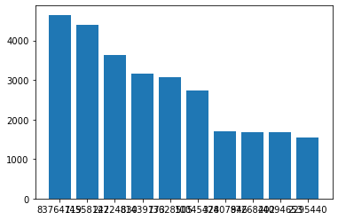
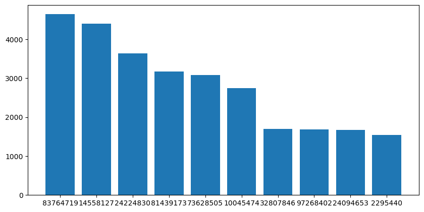
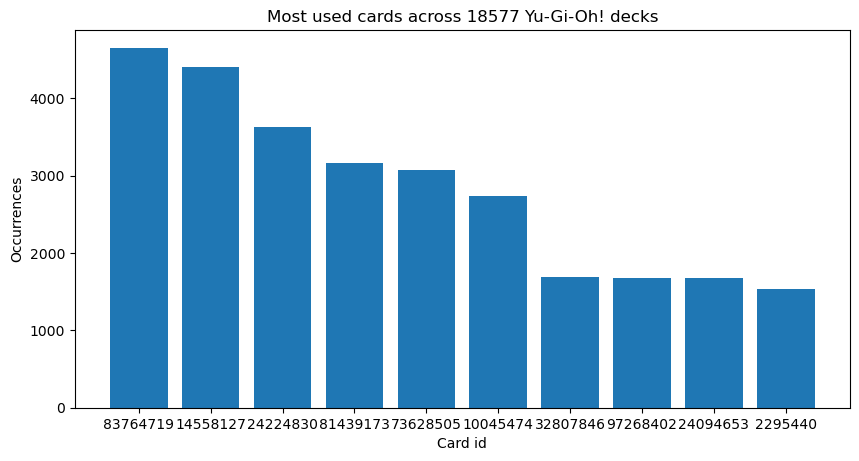
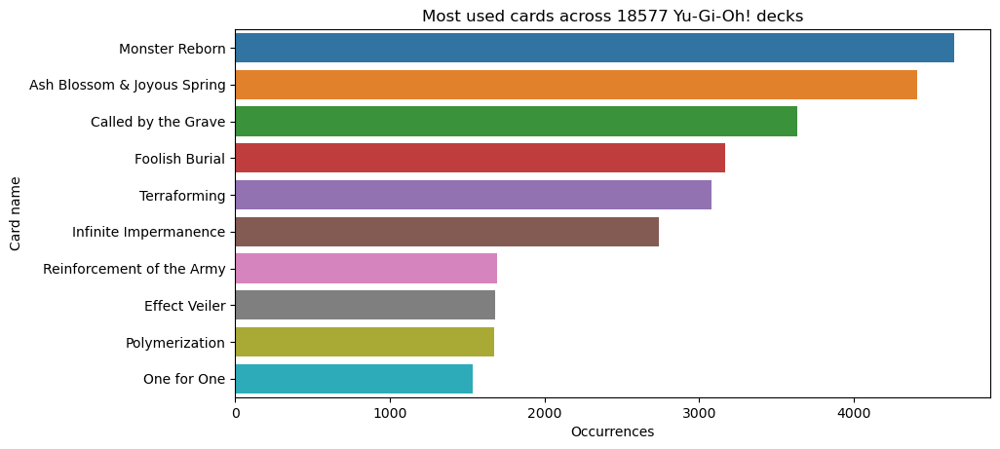
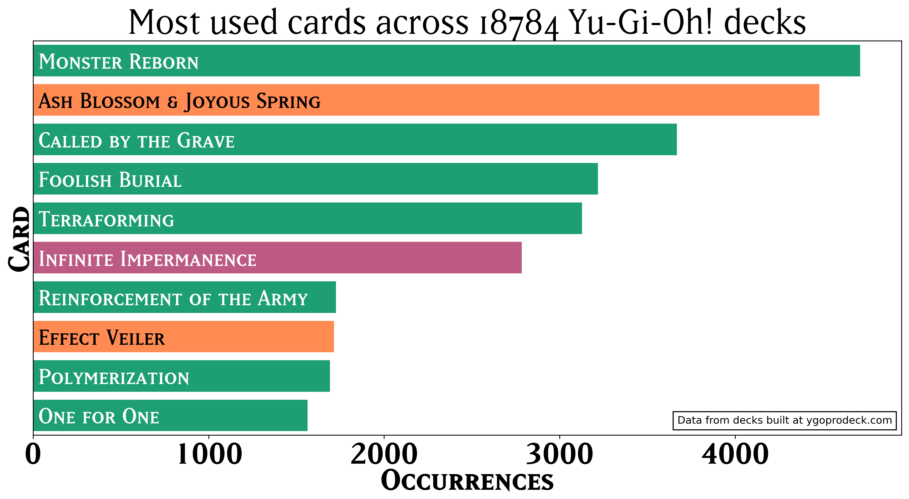

Mejorando nuestros gráficos de barras
En esta ocasión les quiero hablar de cómo mejorar sus gráficos de barras con colores y fuentes personalizadas… aunque me gustaría que esta fuera una lección sobre cómo es que podemos sacar más provecho de Matplotlib y herramientas (como Seaborn) que se construyen al rededor de esta poderosa librería.
Puedes usar este notebook de Kaggle como referencia o como punto de inicio para tu experimentación.
Los datos
Ultimamente he estado obsesionado con Yu-Gi-Oh! un juego de cartas en donde cada jugador elije cartas para su baraja, y encontré un dataset que contiene muchos, muchos decks… en fin, no es necesario que sepas nada sobre el juego para seguir este tutorial. Lo importante es que me hice de un dataset de barajas, y quise averiguar cuáles eran las cartas más usadas del juego, supongamos que tenemos un par de listas card_ids y counts con los identificadores de las cartas más comunes y la cantidad en la que aparecen en todas las barajas que encontré.
print(card_ids)
print(counts)
['83764719', '14558127', '24224830', '81439173', '73628505', '10045474', '32807846', '97268402', '24094653', '2295440']
[4649, 4406, 3634, 3169, 3076, 2739, 1695, 1682, 1676, 1539]
Que indica que el id 83764719 aparece 4649 veces, el id 14558127 lo hace 4406 veces y así sucesivamente…
Además, tengo un diccionario que me permite obtener más información sobre determinada carta a partir de su identificador:
card_by_id['83764719']
{
"id": "83764719",
"name": "Monster Reborn",
"type": "Spell Card",
"desc": "Target 1 monster in either GY; Special Summon it.",
"image_url": "https://storage.googleapis.com/ygoprodeck.com/pics/83764719.jpg",
"image_url_small": "https://storage.googleapis.com/ygoprodeck.com/pics_small/83764719.jpg",
}
Tenemos cosas como el nombre y el tipo de carta, esos atributos nos serán de utilidad más adelante.
Ahora sí, a graficar
Tenemos ids de cartas y la cantidad de veces que aparecen, suena a un trabajo para… ¡una gráfica de barras! así es como la harías usando matplotlib:
plt.figure()
plt.bar(card_ids, counts)

Tamaño de la gráfica
Además de las críticas obvias (gráfica sin título, no hay etiquetas en los ejes…) ¡la gráfica es horriblemente pequeña! para arreglar esto, podemos jugar con los argumentos dpi y figsize:
plt.figure(figsize=(10,5), dpi=100)
plt.bar(card_ids, counts)

Un poquito mejor, ¿cierto? los argumentos que usamos nos ayudan a controlar dos cosas:
figsizecontrola el tamaño de la gráfica en pulgadas; el primer valor de la tupla es el valor horizontal y el segundo es verticaldpicontrola los puntos por pulgada en nuestra gráfica, va de la mano configsize. El usar este argumento nos facilitará en demasía el controlar el tamaño del texto en nuestra gráfica.
La API orientada a objetos
Para permitirnos aún más personalización, tendremos que aventurarnos a usar la no tan conocida API orientada a objetos de matplotlib, pero como verás no es nada del otro mundo:
fig = plt.figure(figsize=(10,5), dpi=100)
ax = fig.gca()
ax.bar(card_ids, counts)
La gran diferencia es que no tenemos ya más referencias a plt más allá de la primera que nos ayuda a crear una figura. La novedad, también radica en que usamos el método gca (que proviene de get current axes) para obtener el axes que reside dentro de nuestra figura. Una vez hecho esto, ya podemos empezar a personalizar la gráfica:
ax.set_xlabel("Card id")
ax.set_ylabel("Occurrences")
ax.set_title(f"Most used cards across {deck_count} Yu-Gi-Oh! decks")

¡Entra Seaborn!
Muchas veces, si bien podemos lograr todos los resultados que queramos usando solamente matplotlib, hay ocasiones en las que podemos delegar este trabajo a otras librerías como Seaborn. Digamos que queremos mejorar aún más nuestra gráfica usando barras horizontales y los nombres de las cartas:
card_names = [card_by_id[card_id]["name"] for card_id in card_ids]
fig = plt.figure(dpi=100, figsize=(10,5))
ax = fig.gca()
sns.barplot(x=counts, y=card_names, ax=ax, orient="h")
ax.set_ylabel("Card name")
ax.set_xlabel("Occurrences")
ax.set_title(f"Most used cards across {deck_count} Yu-Gi-Oh! decks")
La novedad es que estamos usando seaborn (lo renombramos como sns en nuestro script) y, algo muy importante, le estamos pasando el argumento ax para que haga uso del axis que nosotros queremos. El resultado es el siguiente:

Se ve un poco mejor, pero la podemos hacer aún más atractiva.
Personalización máxima
Ahora podemos comenzar a crear nuestra gráfica:
fig = plt.figure(figsize=(15,7), dpi=300)
ax = fig.gca()
sns.barplot(x=counts, y=card_names, ax=ax, orient="h")
Tipografías personalizadas
Como se trata de una gráfica sobre cartas de Yu-Gi-Oh! decidí usar las tipografías que se usan para las cartas:
# fm es matplotlib.font_manager
card_name_prop = fm.FontProperties(fname="card_name.ttf", size=30)
card_effect_prop = fm.FontProperties(fname="card_effect.ttf", size=40)
card_effect_prop_sm = fm.FontProperties(fname="card_effect.ttf", size=20)
card_number_prop = fm.FontProperties(fname="card_number.ttf", size=30)
fname es la ruta de la tipografía que vamos a usar, y los parámetros size tuve que averiguarlos a prueba y error (como casi todo en matplotlib). Mantengamos las referencias ahí, más adelante las vamos a usar.
Etiquetas de los ejes
Tengo la idea de poner los nombres de las cartas dentro de las barras, así que las podemos quitar las etiquetas del eje de las y:
#ax.axes.get_yaxis().set_visible(False)
ax.axes.get_yaxis().set_ticks([])
Agreguemos las etiquetas, esta vez usando las tipografías personalizadas que definimos anteriormente. También vamos a cambiarle la tipografía a los valores en el eje de las x usando el método ax.get_xticklabels:
ax.set_ylabel("Card", fontproperties=card_number_prop)
ax.set_xlabel("Occurrences", fontproperties=card_number_prop)
for label in ax.get_xticklabels() :
label.set_fontproperties(card_number_prop)
Texto dentro de las barras
Cada una de las barras dentro de nuestra gráfica no es más que una instancia de una clase llamada matplotlib.patches.Rectangle, a los cuales podemos acceder mediante la propiedad patches de nuestros axes. Cada uno de estos patches tiene diversas propiedades como su posición en [x,y], el color de relleno, entre otras.
Nosotros nos aprovecharemos de tener acceso a estos patches poner los nombres dentro de las barras usando el método text que ofrece nuestro ax:
for card_id, rect in zip(card_ids, ax.patches):
x, y = rect.xy
card = card_by_id[card_id]
rect_color, font_color = find_colors(card["type"])
rect.set_facecolor(rect_color)
ax.text(30 , y + 0.6, card["name"], color=font_color, fontproperties=card_name_prop)
Pie de página
A la hora de compartir una gráfica siempre es importante informar de dónde obtuvimos la información, o tal vez una pequeña nota de copyright indicando que nosotros fuimos los creadores de esta, para este propósito podemos usar la clase AnchoredText:
text = AnchoredText("Data from decks built at ygoprodeck.com", loc=4,
prop={'size': 10,}, frameon=True)
ax.add_artist(text)
Y el esperado resultado final es:

Y voilá, nuestra gráfica está lista para ser compartida con el mundo.
Como siempre, comentarios y dudas son bienvenidos en mi cuenta de Twitter @io_exception. Esta vez todo el código para reproducir lo que hicimos aquí está en este notebook de Kaggle (si no sabes qué es Kaggle, puedes ver mi video sobre el tema).
Subscríbete a 🌮 tacos de datos | Aprende visualización de datos en español.
Recibe las mejores publicaciones directamente a tu caja de entrada